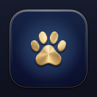

Pet Business App for Groomers, Pet Sitters and Dog Walkers — offline, no subscription
Pet Business Tracker is an appointment, client and income tracker for groomers, boarding and daycare operators, dog walkers, pet sitters and trainers. It runs on your phone and your computer with no internet and no monthly platform fee.
Get it on EtsyOne-time purchase. No subscription.
What it does
- Today screen: move each appointment from Scheduled to Confirmed, In progress and Completed.
- Calendar with month and week views and an overlap warning, so you do not double-book.
- Client records and a detailed profile for each pet: species, breed, weight, microchip number, temperament, allergies and notes, plus a photo.
- Vaccine due dates: a badge appears thirty days before and changes color when the date has passed.
- Appointments with service, duration, price, payment method and status, with repeat booking for regular clients.
- Reminders tab: tap an appointment and WhatsApp, SMS or email opens with a ready message; mark it as sent to keep track.
- Income by day, week, month or all time, with collected, awaiting payment and booked-for-later amounts shown separately.
- Expenses by category and a Cash view showing net cash; export transactions and expenses as CSV.
- Print schedules, client lists, receipts, client cards and period reports (Letter, A4 or 80 mm), with your own logo.
- Fix mistakes: reopen a completed or cancelled appointment, or change a payment back to unpaid.
How it works
- You buy it once on Etsy and download the file in a web browser (the Etsy phone app cannot download digital files).
- On a computer, you open the app file in your browser. On a phone, you open the app's web address in Safari (iPhone) or Chrome (Android) and choose Add to Home Screen (Android: Install app).
- Your data stays on your device. There is no account and no subscription.
- After the first load it works without internet.
- Languages: English, Spanish, French, German and Turkish.
What it does not do
- No live cloud sync between devices. Phone and computer each keep their own data; move it with the backup file.
- No team accounts.
- No automatic text messages: you tap send yourself, so the app has no per-message fees.
- It is a business tracking tool. It is not medical software and gives no health advice, and it gives no tax advice.
Questions
Is Pet Business Tracker a one-time purchase?
Yes. You pay once on Etsy and the app is yours. There is no monthly fee and no renewal.
Does it work offline?
Yes. After the first load it needs no internet. Clients, pets, photos, appointments and income are stored on your device.
Which pet businesses is it for?
Salon and mobile groomers, boarding and daycare, dog walkers, pet sitters and trainers.
Does it send reminders automatically?
No. It opens WhatsApp, SMS or email with a ready-to-send message and you send it. You can then mark it as sent.
Can I use my own logo on receipts?
Yes. Add your logo once in Settings and it appears on receipts, client cards and period reports.